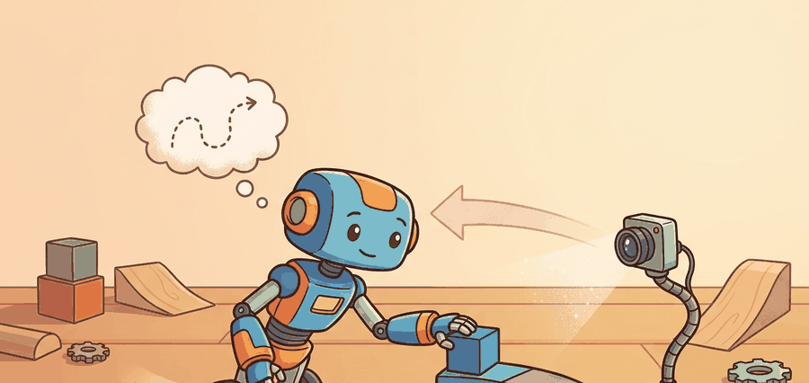

"A world model earns its latent only when the latent captures what the robot can change."
A Compact Latent State

A robot arm reaches for a cup. Its camera returns 21,168 pixel values per frame. But whether the grasp succeeds depends on three numbers: object pose, gripper aperture, and contact force. Predicting the full image is not just wasteful; it actively misleads the planner, which spends capacity on shadows and background texture it will never act on. Latent world models are the solution the field converged on over the last five years: compress observations down to a small state that keeps exactly what drives the next decision and discard the rest. This section establishes what a latent state must preserve, how to measure whether a given representation meets that bar, and why the compression-versus-control tradeoff is the central design choice in any model-based embodied system.
Start with the failure of raw observation prediction, then ask what information the controller truly needs, then check whether the latent state supports planning, value estimation, and diagnosis under partial observability.
Latent prediction is worthwhile only when the compressed state remains decision-sufficient, meaning it preserves every distinction that would change the action the controller selects. Compression without control relevance is just a smaller mistake.
Problem First
A robot can observe a high-dimensional image stream while the task depends on a small hidden state, such as object pose behind occlusion, wheel slip, or whether a drawer is already latched. Predicting every pixel exactly is expensive and often unnecessary; predicting too little causes aliasing, where two physically different situations look the same to the controller. The middle ground is a compact state that is small enough to roll forward quickly yet rich enough to choose safe actions. The deeper reason this is hard is partial observability: the agent never sees the full world state directly. A belief state (a probability distribution over what the true hidden state might be, given everything observed so far) is the standard tool for reasoning under this kind of uncertainty, and it is what the latent state below is built to approximate.
Core Model
Model-based control under partial observability is naturally written as a belief-state problem. The latent state plays the role of a learned belief: $$z_t \sim q_\phi(z_t \mid h_t, o_t), \qquad h_t = f_\theta(h_{t-1}, z_{t-1}, a_{t-1}).$$ The deterministic memory \(h_t\) carries long-range context, while the stochastic variable \(z_t\) captures the uncertainty that remains after seeing the new observation. Concretely: \(q_\phi\) is the encoder network (subscript \(\phi\) denotes its trainable weights) that turns a new observation into a latent sample, and \(f_\theta\) is the dynamics network (weights \(\theta\)) that advances memory given the previous latent and action; the two networks are trained jointly so that rolling \(h_t\) forward stays consistent with what \(q_\phi\) would have inferred from a real observation.
Prediction matters because planning and policy learning happen over future latent states: $$\hat z_{t+k+1} \sim p_\theta(z_{t+k+1} \mid h_{t+k+1}), \qquad J(\pi) = \mathbb{E}\Big[\sum_{k=0}^{H-1} \gamma^k r(\hat z_{t+k}, a_{t+k})\Big].$$ Here \(p_\theta\) is the same dynamics model used to imagine forward without waiting for a real observation, \(\gamma\) is the discount factor that down-weights distant rewards, and \(J(\pi)\) is the expected return the policy \(\pi\) is trying to maximize over a planning horizon of length \(H\). The important question is not whether \(z_t\) reconstructs pretty images. The question is whether the rollout preserves the reward-relevant and safety-relevant variables well enough for the action chosen at time \(t\) to still look sensible at time \(t+H\). This is also why value estimation, a critic network scoring how good a state is, needs the same decision-sufficient latent as the planner: a critic trained on \(z_t\) can only rank two states correctly if \(z_t\) still distinguishes them, so a value function built on an aliased latent will misjudge exactly the states where the correct action matters most.
For that reason, control-relevant abstraction is stricter than compression alone. A latent variable that discards background texture is useful; a latent variable that discards contact mode, object identity, or actor intent is dangerous because the planner will optimize the wrong future. Figure 38.1B contrasts the two rollout paths and shows why the compact latent route is the one the planner can afford to search inside a tight control loop.
Use observations to infer a compact belief state, roll that state forward under candidate actions, score the imagined futures with reward and safety models, then execute only the first action before re-encoding the next observation. This receding-horizon pattern is why latent space prediction can tolerate some model error: the agent replans before long-term drift fully accumulates.
Step-Through: compounding rollout error
Trace through a 5-step latent rollout with a per-step prediction accuracy of 0.97 (a 3% error per step), starting from a clean encoding (error 0 at step 0). Surviving accuracy multiplies: step 1 = 0.97, step 2 = 0.97 x 0.97 = 0.9409, step 3 = 0.9409 x 0.97 = 0.9127, step 4 = 0.9127 x 0.97 = 0.8853, step 5 = 0.8853 x 0.97 = 0.8587. So the accumulated error climbs 0.00 -> 0.03 -> 0.0591 -> 0.0873 -> 0.1147 -> 0.1413. After just 5 steps a "small" 3% per-step error has grown past 14%, and the planner at step 5 is reasoning about a state that is already 14% wrong. Extend to 15 steps and 0.97^15 = 0.633, meaning over a third of the state is fiction. The numbers show why horizon length is not free: each step you add multiplies, not adds, the drift.
When tuning the imagination horizon in DreamerV3, start with the default of 15 steps and inspect the imag/reward_mean versus imag/discount_sum curves in TensorBoard. If imag/discount_sum saturates well before step 15, the effective horizon is already shorter than what you set, so reducing horizon in dreamer.yaml will lower compute without hurting policy quality. A per-step latent prediction error above roughly 3% is a reliable signal that the current horizon is too long for the encoder quality you have, because errors compound multiplicatively across steps.
Minimal Probe
The probe below shows the basic economic argument for latent planning. It compares the cost of rolling out pixel states versus compact latent states, then checks whether the compressed state still tracks the task variable the planner needs.
# Compare rollout cost in pixel space and latent space.
# Then verify that the latent variable still tracks task progress.
import numpy as np
pixel_dim = 84 * 84 * 3
latent_dim = 64
horizon = 15
transition_cost = np.array([pixel_dim * horizon, latent_dim * horizon])
task_progress = np.array([0.15, 0.33, 0.49, 0.71])
latent_proxy = np.array([0.12, 0.31, 0.52, 0.69])
tracking_error = np.abs(task_progress - latent_proxy).mean()
print(
{
"pixel_rollout_scalars": int(transition_cost[0]),
"latent_rollout_scalars": int(transition_cost[1]),
"mean_progress_error": round(float(tracking_error), 3),
}
){'pixel_rollout_scalars': 317520, 'latent_rollout_scalars': 960, 'mean_progress_error': 0.022}
Expected behavior: The latent rollout is dramatically cheaper to evaluate, yet the average task-progress error stays small. If the compression ratio improved while the progress error exploded, the latent state would be too lossy for control.
The from-scratch probe takes about 15 lines. In practice, the same state-update and rollout bookkeeping drops to about 5 lines with the official DreamerV3 codebase or vectorized PyTorch modules. Those libraries handle batching, replay-buffer slicing, recurrent unrolling, and accelerator placement internally, so the engineer can focus on diagnostics and evaluation rather than tensor plumbing.
Practical Recipe
- Write down the hidden variable the task actually depends on, such as contact mode, object pose, or progress-to-goal.
- Define how the latent state should expose that variable to the planner or critic.
- Measure whether rollout cost drops faster than decision quality degrades.
- Stress the model with occlusion, delay, or an unseen distractor, then inspect which latent coordinate or prediction head fails first.
The easiest failure is to celebrate a strong reconstruction or low latent loss while the planner still confuses two action-critical states. If the next action would differ but the latent does not, the representation is not ready.
Compounding rollout error works like a cook seasoning a dish by taste at each step rather than measuring once. A pinch too much salt at step one is barely noticeable; by step fifteen, the pot is inedible even though no single addition seemed wrong. A 2% per-step prediction error in latent space feels negligible in isolation, but each step multiplies the previous mistake, so after fifteen steps the accumulated error can exceed 25% and the planner is navigating a fiction.
Three failure modes recur across deployed latent world models:
- Latent collapse: the encoder maps all observations to a tight cluster so reconstruction loss is low but the planner sees every state as nearly identical, causing it to repeat a single safe-but-suboptimal action.
- Compounding rollout error: a per-step latent prediction error of 2% grows to roughly 26% after 15 steps (0.98^15), so a horizon that looks safe in validation can mislead the planner badly at deployment.
- Distribution shift after intervention: the latent trained on passive rollouts may not encode the consequences of novel actions because those transitions were never seen during training, causing the imagined future to look plausible while the real robot encounters an unmodeled contact or constraint.
A manipulation team training a drawer-opening robot often sees two frames that look nearly identical while the hidden latch state differs. A pixel predictor happily reconstructs both scenes; a useful latent state must separate them because the next action, pull harder or reposition the gripper, depends on the hidden contact mode. That is why latent prediction is fundamentally a control design choice, not only a compression trick.
Real-World Application: Tesla Autopilot occupancy network
Based on Tesla's public AI Day presentations, its Autopilot stack does not roll forward raw camera pixels to plan a lane change. Its occupancy network compresses eight camera streams into a compact 3D occupancy-and-flow latent, reported as a few hundred values describing where matter is and how it moves, and the planner searches trajectories inside that latent at the control rate. Exact architecture details are not independently published, but the public description matches the decision-sufficiency argument: the system keeps the variables that change steering and braking while discarding sky texture and billboard detail it never acts on.
A latent state that cannot tell "drawer latched" from "drawer unlatched" is like a hotel keycard that opens every room: impressively compact, catastrophically useless. The goal is a representation that discriminates exactly the things the robot is about to regret getting wrong.
Foundation world models for embodied agents (2024-2025). Large-scale pretraining of a single world model across diverse robot morphologies and tasks has become tractable. UniSim (Yang et al., 2024, Google DeepMind) trains a video-based world model on internet-scale human action data and robot demonstrations, producing a latent that supports zero-shot task imagination for manipulation and navigation without per-task fine-tuning. The latent here is not hand-designed; it emerges from scale. The open question is whether the resulting representation is decision-sufficient or merely visually plausible for novel contact-rich tasks.
Tokenized discrete latent spaces for planning (2024-2025). Inspired by language model architectures, several groups now quantize the latent state into discrete tokens so that a transformer can perform multi-step lookahead via next-token prediction. SWIM (Scalable World and Imagination Model, Meta AI, 2025) applies this to long-horizon robot planning and reports that discrete tokens reduce compounding rollout error relative to continuous RSSM latents on tasks with more than 30-step horizons. The tradeoff versus continuous latents for force-feedback tasks is still unsettled.
Tactile-aware latent fusion (2024-2025). Contact-rich manipulation exposes a persistent gap: camera encoders learn to ignore fingertip-scale force signatures because they occupy few pixels. The Sparsh tactile world model (Carnegie Mellon University, 2024) injects GelSight and DIGIT tactile readings as an auxiliary modality into the latent update step, recovering contact-mode discrimination with under 2 ms overhead per step at 100 Hz. Making this fusion robust under sensor noise and embodiment change is an active problem.
Open problem for a PhD student: All three directions above assume that the latent dimensionality is fixed at training time. A robot that must simultaneously track coarse pose (low precision, high range) and fingertip contact state (high precision, binary) needs different compression ratios in different parts of its state space. Designing a latent world model with dynamic or task-conditioned dimensionality, where the effective latent size adapts per time step based on uncertainty, and proving that the resulting planner remains decision-sufficient, is an open and tractable thesis problem.
For state estimation under partial observability, revisit Chapter 8. For receding-horizon control, see Chapter 37. For predictive representations that do not decode full images, continue to Chapter 40.
Latent-space prediction wins in embodied systems for three reasons. First, planning cost scales with state dimension and horizon, so compression makes search or imagination feasible. A 15-step rollout in pixel space touches roughly 330,000 scalar operations per step. The same rollout in a 64-dimensional latent touches fewer than 1,000. That ratio determines whether online planning fits inside a 50 ms control loop at all. Second, the latent can align with hidden variables, such as contact mode or intent, that are easier to reason about than raw pixels. The sample-efficiency gap this produces is striking. A model-free policy learning entirely from real robot interaction typically needs 40,000 to 80,000 episodes to solve a tabletop manipulation task. A latent world model that plans inside imagination reaches the same success rate in roughly 300 real episodes, because the robot rehearses thousands of imagined futures for every single physical attempt. Third, rollout error is often more benign in latent coordinates because the model preserves task structure instead of every texture and shadow.
The tradeoff is aliasing. If two states look similar in the learned representation but require different actions, this is called the decision-aliasing failure mode, and the controller can become overconfident. That is why long-horizon visual plausibility is not enough. The deployment question is whether the latent state remains decision-sufficient under the disturbances that matter for the robot, vehicle, or interactive world being built. Why that question carries such weight becomes clear once we notice that aliasing on hardware is not merely a scoring error. On a physical robot, aliasing has irreversible consequences. If the latent conflates "drawer slightly open" with "drawer fully closed," the planner may command a pull force large enough to tear the hardware. Unlike a simulation reset, physical damage cannot be undone, and the robot cannot retry from a corrected state. No reset restores the torn drawer. Embodied systems therefore require the latent to discriminate precisely the states where wrong actions cause harm, not just the states where wrong actions reduce reward. Aliasing arises from how encoders allocate capacity. Reconstruction loss over the full observation rewards capacity in proportion to visual area, so a large uniform floor dominates the gradient while a small fingertip-contact indicator, worth only a handful of pixels, gets underweighted. The encoder then collapses physically distinct contact states into one latent cluster whenever they look alike, producing aliasing exactly where the task is most sensitive. If capacity allocation is what plants the flaw, the next thing to pin down is which operating condition finally trips it.
Checkpoint
So far: latent prediction wins on cost and sample efficiency, but it trades that win for an aliasing risk, wrong actions on physically distinct states that look identical in the compressed representation, which is dangerous on hardware because damage cannot be undone, and which typically originates in how the encoder's reconstruction loss underweights small but task-critical regions of the observation.
Before reading the next paragraph, guess where this breaks first: a mobile robot trained indoors deploys outdoors on a wet day. Does it fail because rollout cost spikes, because the planner runs out of horizon, or because the encoder maps a novel observation to the wrong latent region?
When it breaks in the wild
Consider a specific case. A mobile robot trained indoors with DreamerV3 achieves a 64-dimensional latent that tracks pose and obstacle distance well enough to plan 10-step paths with under 3 cm error. Tested outdoors, sunlight reflections on wet pavement produce observation patterns outside the training distribution. The encoder maps these novel inputs to latent coordinates near "clear floor," the planner imagines safe forward motion, and the robot drives into a puddle. The rollout math holds; the failure is a decision-sufficiency failure caused by distribution shift. This is when latent prediction breaks: not when rollout cost rises, but when the encoder can no longer reliably place novel observations in the part of latent space that the planner was trained to interpret correctly. A world model that predicts the wrong future with complete confidence is more dangerous than one that admits it does not know.
A common assumption is that predicting in latent space is primarily a speed trick, so any compression that reduces dimensionality while keeping reconstruction loss low is a success. This is wrong in an embodied AI context because a compact representation that fails to separate action-critical states is not just suboptimal but actively dangerous: the planner will confidently choose the wrong action whenever two physically distinct situations collapse to the same latent point. The correct mental model is that latent-space prediction is a control design choice first and a computational shortcut second. The latent state must be decision-sufficient, meaning it must preserve every distinction that would change the action selected, even if preserving those distinctions costs representational capacity or requires auxiliary losses beyond standard reconstruction.
Project Ideas
Beginner (weekend): Build a latent-space probing dashboard for a Gymnasium CartPole or LunarLander environment: train a small Variational Autoencoder (VAE) on 1,000 rollout frames, then scatter-plot the 2D latent coordinates colored by task-progress percentile to verify that decision-critical states (pole angle, landing altitude) separate cleanly in the compressed space. The key challenge is choosing an auxiliary loss that penalizes latent collapse without over-regularizing to the point where the encoder ignores task-relevant variation.
Intermediate (1-2 weeks): Implement a minimal latent world model for a MuJoCo Reacher or MuJoCo pusher task using a Gated Recurrent Unit (GRU, a recurrent neural network cell that carries forward a compact hidden state across time steps)-based recurrent state-space model (RSSM): encode observations to a 32-dimensional stochastic latent, roll out 10-step imagined trajectories, and evaluate whether a Cross-Entropy Method (CEM) planner running entirely in latent space achieves comparable success rates to a model-free Soft Actor-Critic (SAC, an off-policy reinforcement learning algorithm that learns directly from real environment transitions with no world model) baseline. The key challenge is diagnosing compounding rollout error, specifically confirming that per-step prediction error stays below 3% before the latent horizon is extended beyond five steps.
Can you explain one variable that should be kept in the latent state, one variable that may safely be discarded, and one deployment test that would reveal whether the compression went too far?
Predict in latent space when the compact state lowers rollout cost without erasing the variables that determine safe, effective action.
Choose an embodied task you care about and list three observation details that should be compressed away and three hidden variables that must survive in the latent state. Then propose one perturbation test that would falsify your design.
Lab: does the latent keep the variable that matters?
Goal: see decision-aliasing appear and disappear by hand, in about 25 minutes. Tools: Python with gymnasium, numpy, scikit-learn (PCA, Principal Component Analysis, a linear method that finds the axes of greatest variance in the data), and matplotlib; no GPU needed. Setup: roll out the CartPole-v1 environment for 2,000 steps under a random policy and log each observation (cart position, cart velocity, pole angle, pole angular velocity) plus a binary label for "pole angle within 3 degrees of upright." What to vary: fit a tiny linear autoencoder (or PCA) that compresses the 4D observation to a 1D code, then to a 2D code; separately, train a 2D code that minimizes reconstruction loss versus one that also predicts the upright label (add the label-prediction term to the loss). What to observe: scatter-plot each 2D code colored by the upright label. The pure-reconstruction code will often place near-upright and clearly-falling states close together (aliasing), while the label-aware code pulls them apart. Measure it: train a logistic classifier on each code and compare upright-vs-not accuracy. You should see the reconstruction-only latent score noticeably worse on the safety-critical distinction even when its reconstruction error is lower, the section's core claim made concrete.
Bibliography & Further Reading
Hafner, D. et al.. "Mastering Diverse Domains through World Models." (2023). https://arxiv.org/abs/2301.04104
DreamerV3 shows why compact imagined rollouts can support broad control tasks with a single configuration.
Hansen, N., Su, H., and Wang, X.. "TD-MPC2: Scalable, Robust World Models for Continuous Control." (2023). https://openreview.net/forum?id=Oxh5CstDJU
TD-MPC2 is the main decoder-free counterpoint: it keeps the latent compact because planning happens directly in that space.
Hafner, D. et al.. "Learning Latent Dynamics for Planning from Pixels." (2019). https://arxiv.org/abs/1811.04551
PlaNet is the canonical source for the latent-dynamics framing that motivates this section.